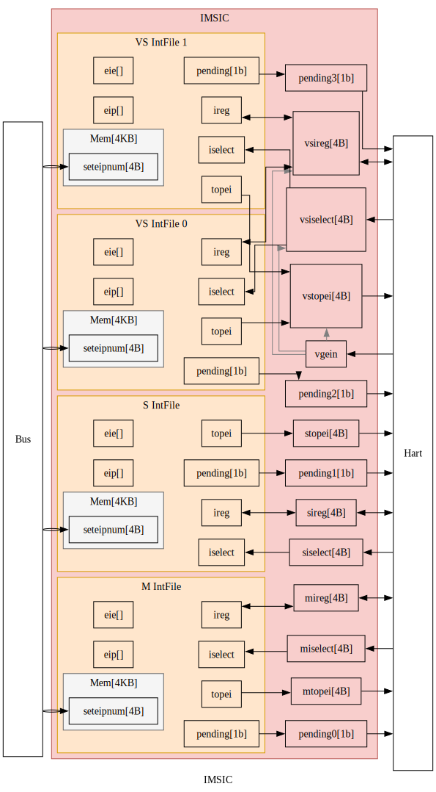
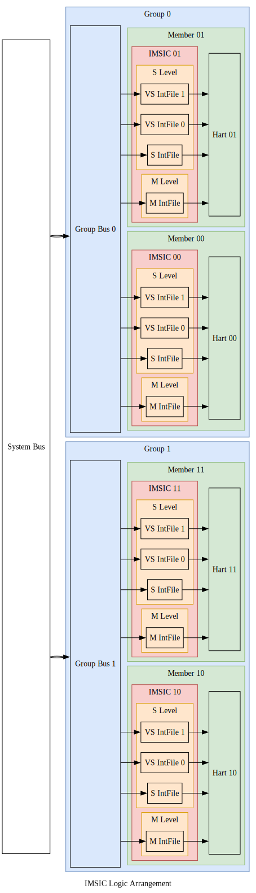
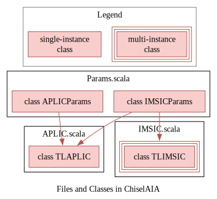

😺ChiselAIA
ChiselAIA的实现遵循RISC-V高级中断架构（Advanced Interrupt Architecture, AIA）规范。 实现与规范之间的任何差异都应视为实现bug。
The implementation of ChiselAIA adheres to the RISC-V Advanced Interrupt Architecture (AIA) Specification. Any discrepancies between the implementation and specification should be treated as implementation bugs.
简介（Introduction）
AIA旨在高效地将外部中断路由到对应的处理器核心（hart）和特权态。 这种路由通过两个中断控制器来完成：
AIA is designed to efficiently route external interrupts to the appropriate harts and privilege levels. This routing is accomplished by two interrupt controllers:
- Incoming Message-Signaled Interrupt Controller (IMSIC)
- Advanced Platform-Level Interrupt Controller (APLIC)
为什么需要两种控制器？ 因为存在两类外部设备：
- 线设备： 通过专用的电信号（边沿或电平）传输中断。 它的特点是实现简单，可扩展性差。 因为每个中断都意味着一根连接到处理器核心的物理线。
- 消息信号中断(Message-signaled-interrupt, MSI)设备： 中断被编码为消息，并通过总线/网络传输。 因为每个中断不需要专用的物理连线，因此MSI与线中断相比，有更好的可扩展性。
Why two types of controllers? There are two types of external devices:
- Wired devices: Interrupts are transmitted via dedicated electronic signals (edge or level), which is simple to implement but faces scalability challenges, as each interrupt requires an physical wire connected to the hart.
- Message-signaled-interrupt (MSI) devices: Interrupts are encoded as messages and transmitted over bus/network, which offers better scalability compared to wired interrupts, as no dedicated physical wires needed for each interrupt.
在 RISC-V AIA 中：
- APLIC负责处理线外部中断。
注意：APLIC可以在两种模式下运行(domaincfg.DM)：
- 直接递送模式：APLIC直接将线中断路由到处理器核心，无需IMSIC参与。
- MSI递送模式：APLIC将线中断转换为MSI并转发给IMSIC。
- 由于MSI更具扩展性，后续讨论默认APLIC采用MSI递送模式。
- IMSIC负责处理MSI。
In RISC-V AIA:
- APLIC handles wired external interrupts.
Note: APLIC can operate in two modes (
domaincfg.DM):- Direct delivery mode: APLIC directly routes wired interrupts to harts without IMSIC involvement.
- MSI delivery mode: APLIC converts wired interrupts into MSIs and forwards them to IMSIC.
- Since MSIs represent the more scalable approach, our subsequent discussion assumes the APLIC working in MSI delivery mode.
- IMSIC handles MSIs.
设备、中断控制器和处理器核心之间的交互主要涉及两种数据通路： 中断通路和配置通路，如下面两张图所示。
The interaction between devices, interrupt controllers, and harts involves two main types of data paths: interrupt paths and configuration paths, shown as the following two figures.
中断通路（Interrupt Paths）
外部中断主要源自外部设备， 尽管在高级使用场景中，内部设备和处理器核心也可以生成“外部”中断 （例如当监管态向虚拟化监管态注入外部中断时）。 接下来的讨论重点关注外部设备生成中断并通过控制器路由到处理器核心的典型情况。
External interrupts primarily originate from external devices, though in advanced scenarios, internal devices and harts can also generate "external" interrupts (e.g. when supervisor level injects external interrupts into virtualized supervisor level). The following discussion focuses on the typical case where external devices generate interrupts that are routed through controllers to harts.

详细的中断通路如下（注：在语言清晰前提下，我们将省略“外部”）：
- 中断来源于线设备或MSI设备：
- 线设备通路：
- 中断被转发到APLIC的中断域。
- 每个域负责管理某一特权态的一组处理器核心的中断。
- 对于大型对称多处理系统，通常两个域就足够了1：
- 一个机器态域，
- 一个监管态域。
- 域遵循层级结构：
- 所线中断首先到达机器态域。
- 根据APLIC的配置，每个中断可以：
- 转换为MSI并通过总线/网络转发给IMSIC，
- 委托给子域，然后遵循类似的处理流程。
- MSI设备通路：
- MSI通过总线/网络直接路由到IMSIC。
- 线设备通路：
- IMSIC处理流程：
- 每个处理器核心通常有其专用的IMSIC。
- 每个IMSIC包含多个中断文件，每个特权态对应一个中断文件2：
- 一个机器态，
- 一个监管态，
- 多个虚拟化监管态。
- 每个中断文件：
- 维护中断状态(待处理、使能等)，
- 根据配置通过线路向处理器核心发出中断信号。
Here are the detailed interrupts paths (note: "external" is omitted where context is clear):
- Interrupts originate from either wired devices or MSI devices:
- Wired device paths:
- Interrupts are directed to APLIC's interrupt domains.
- Each domain manages interrupts for a specific set of harts at a given privilege level.
- For large symmetric multiprocessing systems, typically two domains suffice1:
- One machine-level domain,
- One supervisor-level domain.
- Domains follow a hierarchical structure:
- All wired interrupts fist arrive at the machine-level domain.
- Based on APLIC configuration, each interrup is either:
- Converted to MSI and forwarded to IMSIC via bus/network,
- Delegated to child domains, which then follow similar processing.
- MSI device paths:
- MSIs route directly to IMSIC via bus/network.
- Wired device paths:
- IMSIC processing:
- Each hart typically has its dedicated IMSIC.
- Each IMSIC contains multiple interrupt files, one per privilege level2:
- One machine level,
- One supervisor level,
- Multiple virtualized supervisor levels.
- Each interrupt file:
- Maintains interrup status (pending, enabled, ...),
- Signals hart based on configuration via wire connection.
配置通路（Configuration Paths）
配置流程遵循两个不同的通路：
- IMSIC配置：
- 每个处理器核心只配置其专用的IMSIC，
- 配置通过线路连接进行。
- APLIC配置：
- 所有处理器核心都可以配置APLIC，
- 配置以消息形式通过总线传输。
Configuration flow follows two distinct paths:
- IMSIC configuration:
- Each hart configures only its dedicated IMSIC,
- Configuration occurs through direct wire connection.
- APLIC Configuration:
- All harts can configure APLIC,
- Configuration transmitted via bus as messages.

引用（References）
-
1
The RISC-V Advanced Interrupt Architecture: 4.2 Interrupt domains: Figure 4.
-
2
The RISC-V Advanced Interrupt Architecture: 1.3.2. External interrupts with IMSICs.
📩IMSIC
在典型的RISC-V系统中，每个处理器核心都配有专用的IMSIC。 IMSIC执行三个主要功能:
- 通过内存映射寄存器接收MSI，
- 为其关联的处理器核心生成中断，
- 管理处理器核心所需的AIA控制寄存器。
In a typical RISC-V system, each hart is paired with its dedicated IMSIC. The IMSIC performs three main functions:
- Receives MSIs through memory-mapped registers,
- Generates interrupts for its associated hart,
- Manages AIA CSRs under hart control.
在对称多处理系统中，多个“核-IMSIC”对可以划分成组， 每组包含相同数量的核-IMSIC对。
In symmetric multiprocessing systems, multiple harts-IMSIC pairs can be organized into groups, with each group containing an equal number of pairs.
单个IMSIC的功能（Individual IMSIC Functionality）
IMSIC的输入与输出（IMSIC IO）
IMSIC与其处理器核心紧密耦合， 直接使用线路连接而不是总线/网络进行信息传输。 其关键信号包括:
pendings: 每个中断文件的待处理中断状态。{m,s,vs}topei: 每个特权态中，优先级最高的外部中断号。{m.s,vs}iselect: 每个特权态中，间接访问控制寄存器的地址。{m,s,vs}ireg: 每个特权态中，间接访问控制寄存器所读写的数据。vgein: 虚拟化监管态的选择信号。
The IMSIC is tightly coupled with its hart, directly using wire connection rather than bus/network for information transfer. Key signals include:
pendings: Pending interrupt status for each interrupt file.{m,s,vs}topei: Top external interrupt ID for each privilege level.{m.s,vs}iselect: CSR indirect access address for each privilege level.{m,s,vs}ireg: Read and write data for indirect CSR access for each privilege level.vgein: Virtualized supervisor level selector.

中断文件的输入与输出（Interrupt File IO）
一个IMSIC负责管理其处理器核心中的所有特权态， 包括：一个机器态、一个监管态和多个虚拟化监管态。 由于每个态的行为在一般情况下是相同的，AIA规范将这些功能模块化成独立且可重用的组件，称为中断文件。 每个中断文件与IMSIC交换与特权态无关的信息:
pending: 该中断文件的中断状态。topei: 该中断文件中，优先级最高的外部中断号。iselect: 该中断文件中，间接访问控制寄存器的地址。ireg: 该中断文件中，间接访问控制寄存器所读写的数据。
One IMSIC manages all privilege levels in its hart, including: one machine level, one supervisor level, and multiple virtualized supervisor levels. As the behaviors of each level are identical in general, the AIA specification modularizes these functionalities of each level into independent and reusable components, called interrupt files. Each interrupt file exchanges privilege-agnostic information with IMSIC:
pending: Interrupt pending status for this interrupt file.topei: Top external interrupt ID for this interrupt file.iselect: CSR indirect access address for this interrupt file.ireg: Read and write data for indirect CSR access for this interrupt file.
中断文件的内存映射寄存器（Interrupt File Memory-mapped Registers）
每个中断文件包含一个4KB内存页，用于接收来自总线/网络的消息。 内存页内仅包含一个4B内存映射寄存器:
seteipnum: 位于偏移量0x0处，接收传入的中断号。
Each interrupt file includes a 4KB memory page for receiving messages from bus/network. The memory page including only one 4B memory-mapped register:
seteipnum: Located at offset of 0x0, receiving incoming interrupt IDs.
中断文件内部的寄存器（Interrupt File Internal Registers）
所有上述接口都与中断文件的内部寄存器交互。 关键的内部寄存器包括:
eip[intSrcNum位]: 表示该中断是否待处理。eie[intSrcNum位]: 表示该中断是否使能。
Each interrupt file maintains internal registers that interact with the interfaces above. The key internal registers consist of:
eip[intSrcNum bits]: Whether this interrupt is pending.eie[intSrcNum bits]: Whether this interrupt is enabled.
多个IMSIC的组织形式（Multiple IMSICs Arrangement）
在大型系统中，核-IMSIC对可以分成多组。 下图显示了一个对称的4核-IMSIC系统。 这4对被分为2组，每组包含2个成员(hart-IMSIC对)。
In a large system, hart-IMSIC pairs can be divided into groups. The below figure shows a symmetric 4-hart-IMSIC system. These 4 pairs are divided into 2 groups, and each group contains 2 members (hart-IMSIC pairs).

IMSIC地址字段（IMSIC Address Fields）
为了支持物理内存保护(physical memory protection, PMP)，相同特权态的中断文件位于同一内存区域:
- 机器态内存区域:
- 每个处理器核心对应一个机器态中断文件
- 监管态内存区域:
- 每个处理器核心对应一个监管态中断文件,
- 每个处理器核心对应多个虚拟化监管态中断文件。
To support physical memory protection (PMP), interrupt files of the same privilege level are located in a same memory region:
- Machine-level memory region:
- One machine-level interrupt file per hart
- Supervisor-level memory region:
- One supervisor-level interrupt file per hart,
- Multiple virtualized supervisor-level interrupt files per hart.
因此，每个处理器核心在机器态内存区域只占一页，但在监管态内存区域占多页， 由客户号（监管态为0，虚拟化监管态为1、2、3、...)索引。 需要四个字段来确定一个IMSIC的内存页的地址：
- 特权态：机器态或监管态。
- 组号：该IMSIC所属的组。
- 成员号：该IMSIC所属的成员。
- 客户号：监管态或虚拟化监管态之一。
Thus, each hart has only one page in machine-level memory region and multiple pages in supervisor-level memory region, indexed by a guest ID (0 for supervisor-level, 1,2,3,... for virtualized supervisor level). When determining the memory page address for a given IMSIC, four fields are needed:
- Privilege Level: Machine level or supervisor level.
- Group ID: The group to which this IMSIC belongs.
- Member ID: The member to which this IMSIC belongs.
- Guest ID: Supervisor level or one of the virtualized supervisor levels.

机器态中断文件的地址表达式为：
The formal expression for a machine-level interrupt file address:
$$ \begin{align} mIntFileAddr = & mBaseAddr \\ & + groupID \times 2^{mGroupStrideWidth} \\ & + memberID \times 2^{mMemberStrideWidth} \\ & + guestID \times 4K \end{align} $$
虚拟化监管态中断文件的地址表达式为：
The formal expression for a virtualized supervisor-level interrupt file address:
$$ \begin{align} vsIntFileAddr = & vsBaseAddr \\ & + groupID \times 2^{vsGroupStrideWidth} \\ & + memberID \times 2^{vsMemberStrideWidth} \\ & + guestID \times 4K \end{align} $$
按照AIA规范的要求，vsGroupStrideWidth与mGroupStrideWidth相同。
更多详细信息，请参阅AIA规范1。
As required by the AIA specification, the vsGroupStrideWidth is the same as the mGroupStrideWidth.
For more details, please refer to the AIA specification1.
IMSIC内存区域（IMSIC Memory Regions）
机器和监管态的内存区域如下所示。
The memory regions for machine and supervisor levels are shown as below.

这里展示一个具体的例子。
假设机器态和监管态的内存区域基地址分别为0x6100_0000和0x8290_0000，那么每个中断文件的地址为：
Here is a concrete example.
Assuming the base addresses for machine-level and supervisor-level memory regions are 0x6100_0000 and 0x8290_0000, respectively,
the addresses for each interrupt file are:
- Machine-level interrupt files:
- IMSIC00:
[0x61000000, 0x61000fff] - IMSIC01:
[0x61001000, 0x61001fff] - IMSIC10:
[0x61008000, 0x61008fff] - IMSIC11:
[0x61009000, 0x61009fff]
- IMSIC00:
- Supervisor-level interrupt files:
- IMSIC00:
[0x82900000, 0x82903fff] - IMSIC01:
[0x82904000, 0x82907fff] - IMSIC10:
[0x82908000, 0x8290bfff] - IMSIC11:
[0x8290c000, 0x8290ffff]
- IMSIC00:
The RISC-V Advanced Interrupt Architecture: 3.6. Arrangement of the memory regions of multiple interrupt files
🧶APLIC
在基于消息的中断模式下，APLIC将传统的线中断转换为MSI。 为了提高效率，除非设备在物理上是分开的（例如在不同的芯片组上），单个APLIC实例即可服务所有处理器核心。
In message-based interrupt mode, the APLIC converts traditional wired interrupts into MSIs. For efficiency, a single APLIC instance should serve all harts, unless devices are physically separated (e.g. on different chiplets).
域（Domain）
APLIC实现了分层的域结构来管理不同的特权态:
- 根域（机器态）直接接收所线中断,
- 子域从其父域接收委托的中断,
- 监管态域可以处理监管态和虚拟化监管态中断。
The APLIC implements a hierarchical domain structure to manage different privilege levels:
- The root domain (machine level) directly receives all wired interrupts,
- Child domains receive delegated interrupts from their parent domains,
- A supervisor-level domain can handle both supervisor-level and virtualized supervisor-level interrupts.
对于大型对称多处理系统，通常两个域的配置就足够了：
- 一个机器态域,
- 一个监管态域。
For large symmetric multiprocessing systems, a two-domain configuration typically suffices:
- One machine-level domain,
- One supervisor-level domain.

内部寄存器（Internal Registers）
APLIC在内部寄存器中维护中断状态，包括两个关键寄存器：
ip[intSrcNum位]: 中断待处理状态寄存器,ie[intSrcNum位]: 中断使能控制寄存器。
APLIC maintains interrupt status in internal registers, including two critical registers:
ip[intSrcNum bits]: Interrupt pending status registers,ie[intSrcNum bits]: Interrupt enable control registers.
这些寄存器通过内存映射接口进行控制。 有关详细的寄存器规范，请参阅AIA规范1。
These registers are controlled through memory-mapped interfaces. For detailed register specifications, refer to the AIA specification1.
竞争条件（Race Conditions）
ip寄存器可以被多个来源修改，从而产生潜在的竞争条件。
AIA规范没有规定APLIC在这种竞争条件下的行为。
ChiselAIA实现了一个基于优先级的解决机制。
优先级(从高到低):
- APLIC内部操作：发送MSI后清除
ip， - 线设备操作：通过
intSrc设置ip， - 处理器核心操作：通过内存映射寄存器设置/清除
ip。
The ip registers can be modified by multiple sources, creating potential race conditions.
The AIA specification does not specify the APLIC behaviors under this race condition.
ChiselAIA implements a priority-based resolution mechanism.
Priority levels (highest to lowest):
- APLIC internal operations: Clearing
ipafter sending an MSI, - Wired device operations: Setting
ipviaintSrc, - Hart operations: Setting/Clearing
ipvia memory mapped registers.
高优先级操作会覆盖低优先级操作。
我们推荐通过编程的方式避免竞争条件：
在通过内存映射寄存器修改相应的ip之前，断开线设备。
Higher priority operations override the lower priority ones.
We recommend to avoid race conditions through programming:
detaching the wired device before modifying corresponding ip through memory-mapped registers.
The RISC-V Advanced Interrupt Architecture: 4.5. Memory-mapped control region for an interrupt domain
🧭集成指南（Integration Guide）
本指南介绍如何将ChiselAIA集成到RISC-V系统中。
This guide introduces the integration process of ChiselAIA into a RISC-V system.
概览（Overview）
集成涉及3个Scala文件和4个Scala类：
TLAPLIC（@APLIC.scala）：基于Tilelink的APLIC模块，每个系统需要一个实例TLIMSIC（@IMSIC.scala）：基于Tilelink的IMSIC模块，每个处理器核心需要一个实例APLICParams和IMSICParams（@Params.scala）：用于配置APLIC和IMSIC实例的参数类
Integration involves 3 scala files and 4 scala classes:
TLAPLIC(@APLIC.scala): The Tilelink-based APLIC module, requiring one instance per system,TLIMSIC(@IMSIC.scala): The Tilelink-based IMSIC module, requiring one instance per hart,APLICParamsandIMSICParams(@Params.scala): Parameter classes for configuring APLIC and IMSIC instances.

注意：TLAPLIC需要同时使用APLICParams和IMSICParams的参数来确定MSI发送地址，而TLIMSIC只需要IMSICParams的参数。
Note: TLAPLIC requires parameters from both APLICParams and IMSICParams to determine MSI sending addresses, while TLIMSIC only needs IMSICParams.
参数（Parameters）
本节概述了APLIC和IMSIC的可配置参数。
虽然提供了默认值，但我们强烈建议根据具体的集成需求，自定义带有👉标记的参数。
其他参数要么是派生的，要么是硬编码的（详情参见Params.scala）。
This section outlines the configurable parameters for APLIC and IMSIC.
While defaul values are provided,
we strongly recommend customizing parameters marked with 👉 to suit your specific integration needs.
Other parameters are either derived or hard-coded, (see Params.scala for details).
命名约定：
Num后缀：某实体的数量，Width后缀：某实体的位宽（通常是log2(实体数量)），Addr后缀：某实体的地址。
Naming conventions:
Numsuffix: Number of the items.Widthsuffix: Bit width of an item (typicallylog2(number of the item)).Addrsuffix: Address of an item.
Class IMSICParams
log2(IMSIC中断源的数量) 默认值8表示IMSIC支持最多256（2^8）个中断源：
log2(number of interrupt sources to IMSIC). The default 8 means IMSIC support at most 256 (2^8) interrupt sources:
intSrcWidth : Int = 8 ,
中断文件的参数（Parameters for interrupt file）
注意：中括号内的变量与AIA规范中的一致（第3.6节：用于多个中断文件的内存区域排列）。
Note: The variables in bracket align with the AIA specification (Section 3.6: Memory Region Arrangement for Multiple Interrupt Files).
👉 每个组的成员数量（Number of members per group）[\(h_{max}\)]：
membersNum : Int = 2 ,
👉 机器态中断文件的基地址（Base address of machine-level interrupt files）[\(A\)]：
mBaseAddr : Long = 0x61000000L ,
👉 监管态和客户态中断文件的基地址（Base addr for supervisor-level and guest-level interrupt files ）[\(B\)]:
sgBaseAddr : Long = 0x82900000L ,
👉 客户中断文件的数量（Number of guest interrupt files）:
geilen : Int = 4 ,
👉 组的数量（Number of groups ）[\(g_{max}\)]:
groupsNum : Int = 1 ,
控制状态寄存器的参数（Parameters for CSRs）
vgein信号的位宽（The width of the vgein signal）:
vgeinWidth : Int = 6 ,
iselect信号的位宽(The width of iselect signal):
iselectWidth : Int = 12 ,
Class APLICParams
log2(APLIC接收的中断源数量)。
默认值7表示APLIC支持最多128（2^7）个中断源。
注意：APLIC的intSrcWidth必须小于IMSIC的intSrcWidth，
因为APLIC的中断源将被转换为MSI，
而APLIC转换成的MSI是IMSIC中断源的子集。
log2(number of interrupt sources to APLIC):
The default 7 means APLIC support at most 128 (2^7) interrupt sources.
Note: APLIC's intSrcWidth must be less than IMSIC's intSrcWidth,
as APLIC interrupt sources are converted to MSIs,
which are a subset of IMSIC's interrupt sources.
intSrcWidth: Int = 7,
👉 APLIC域的基地址（Base address of APLIC domains）:
baseAddr: Long = 0x19960000L,
实例化（Instantiation）
-
APLICParams和IMSICParams：- 每个类一个实例，
- 根据参数部分的说明，实例化参数。
-
TLAPLIC：- 单个实例，
- 参数
params：接收APLICParams的实例， - 参数
imsic_params：接收IMSICParams的实例。
-
TLIMSIC：- 每个核心一个实例，
- 参数
params：接收IMSICParams的实例， - 参数
hartIndex：接收与此IMSIC配对的核心的编号。
-
APLICParamsandIMSICParams:- Single instance each,
- Instantiation parameters according to Parameters section.
-
TLAPLIC:- Single instance,
- Parameter
params: receiving theAPLICParams's instance, - Parameters
imsic_params: receiving theIMSICParams's instance.
-
TLIMSIC:- One instance per hart,
- Parameter
params: receiving theIMSICParams's instance, - Parameter
hartIndex: receiving the index of hart with which this IMSIC paired to.
关于hartIndex（About hartIndex）
根据AIA规范： AIA的hart编号 可能与RISC-V特权架构分配给hart的唯一 hart标识符（“hart ID”）无关。 在ChiselAIA中，hartIndex编码为groupID拼接上memberID。
According to the AIA specification:
The AIA's hart index may or
may not have any relationship to the unique
hart identifier ("hart ID")
that the RISC-V Privileged Architecture assigns to the hart.
In ChiselAIA, the hartIndex is encoded as a concatenation of groupID and memberID:

示例（Examples）
简单的4核系统（A Simple 4-Hart System）
对于一个简单的未分组系统，设置groupsNum=1，则可以将hart ID复用作为AIA的`hartIndex：
For a simple ungrouped system, set groupsNum=1 to allow reuse of hart ID as AIA's hartIndex:
val imsic_params = IMSICParams(groupsNum=1, membersNum=4)
val aplic_params = APLICParams()
val imsics = (0 until 4).map( i => {
val imsic = LazyModule(new TLIMSIC(imsic_params, i)(Parameters.empty))
val aplic = LazyModule(new TLAPLIC(aplic_params, imsic_params)(Parameters.empty))
分组的4核系统（A Grouped 4-Hart System）
为了单元测试，在src/main/scala/ChiselAIA.scala中，我们实例化了一个每组2个成员的2组系统：
In src/main/scala/ChiselAIA.scala, for unit tests, we instantiate a 2-group 2-member-per-group system:
val imsic_params = IMSICParams(groupsNum=2, membersNum=2)
val aplic_params = APLICParams()
val imsics = (0 until 4).map( i => {
val imsic = LazyModule(new TLIMSIC(imsic_params, i)(Parameters.empty))
val aplic = LazyModule(new TLAPLIC(aplic_params, imsic_params)(Parameters.empty))
此配置创建了一个2位的hartIndex，高位表示 groupID，低位表示 memberID。
有关详细的IO连接，请参考src/main/scala/ChiselAIA.scala。
This configuration creates a 2-bit hartIndex where the higher bit represents groupID and the lower bit represents memberID.
For detailed IO connections, refer to src/main/scala/ChiselAIA.scala.